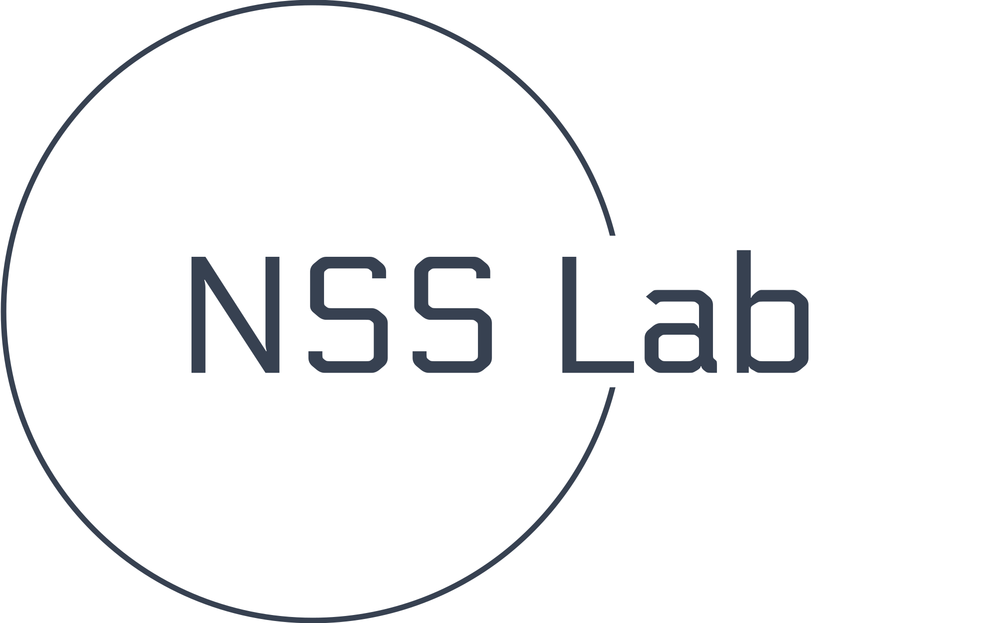

<nav class="navbar navbar-expand-md fixed-top bg-body-tertiary">
  <div class="container-fluid">
    <a class="navbar-brand" routerLink="/">
      
    </a>
    <button
      class="navbar-toggler"
      type="button"
      data-bs-toggle="collapse"
      data-bs-target="#navbarSupportedContent"
      aria-controls="navbarSupportedContent"
      aria-expanded="false"
      aria-label="Toggle navigation"
    >
      <span class="navbar-toggler-icon"></span>
    </button>
    <div class="collapse navbar-collapse" id="navbarSupportedContent">
      <ul class="navbar-nav me-auto mb-2 mb-lg-0">
        <li class="nav-item">
          <a class="nav-link" aria-current="page" routerLink="/">Home</a>
        </li>
        <li class="nav-item">
          <a class="nav-link" routerLink="/team">Team</a>
        </li>
        <li class="nav-item">
          <a class="nav-link" routerLink="/equipment">Equipment</a>
        </li>
        <li class="nav-item">
          <a class="nav-link" routerLink="/publications" aria-disabled="true"
            >Research & Publications</a
          >
        </li>
        <li class="nav-item">
          <a class="nav-link" routerLink="/grants" aria-disabled="true"
            >Grants</a
          >
        </li>
        <li class="nav-item">
          <a class="nav-link" routerLink="/teaching" aria-disabled="true"
            >Teaching</a
          >
        </li>
        <li class="nav-item">
          <a class="nav-link" routerLink="/seminars" aria-disabled="true"
            >Seminars and talks</a
          >
        </li>
      </ul>
    </div>
  </div>
</nav>
